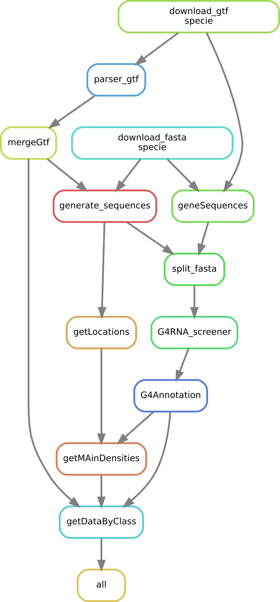

Welcome to G4Conservation documentation!¶
This project aims to predict G-quadruplexes (G4) in genes and transcriptomes species.
Data availability¶
Archive data.
If the upper link is not working, the snakemake pipeline can be executed.
Here is a global pipeline of how to use those scripts : 
Prerequisites¶
To use all scripts in this project you will need to have python2.7 for G4RNA screener and python3 for the other scripts.
You will also need to install G4RNA Screener from Michelle Scott gitlab.
Following is procedure to install G4RNA screener
git clone http://gitlabscottgroup.med.usherbrooke.ca/J-Michel/g4rna_screener.git
sudo apt install python-pip
pip install biopython
pip install numpy
pip install pandas
pip install PyBrain
pip install regex
pip install scipy
cd PATH/TO/PYTHON/dist-packages/ or cd PATH/TO/PYTHON/site-packages/
sudo -i
wget https://dev.mysql.com/get/Downloads/Connector-Python/mysql-connector-python-2.1.4.tar.gz
tar -xzf mysql-connector-python-2.1.4.tar.gz
cd mysql-connector-python-2.1.4
python setup.py install
To install snakemake, do as follow
cd
mkdir software
cd software
wget https://repo.continuum.io/miniconda/Miniconda3-latest-Linux-x86_64.sh
bash Miniconda3-latest-Linux-x86_64.sh
exec bash
conda create --name smake -c bioconda -c conda-forge snakemake=5.7.0
conda activate smake
Installing¶
Except for snakemake and G4RNA screener explained earlier, there is no particular installation because their is only individual home made scripts. Here is a soft description of them:
- ReplaceInformation.py -> This script aims to create junction between exons and also compute the coordinates of introns. To do that, this script takes as a file with informations about transcripts. This file is avaible in Ensembl and downable with Biomart.
- G4RNA Screener -> used on fasta files with genes and junction.
- all G4Annotation -> filters pG4 and add there location and biotype. Inputs are output from G4RNA Screener, the parsed file containing introns coordinates and also a file containing transcripts’s biotype (available on Ensembl).
- G4Calcul.py -> computes all statistics and enrichment about our pG4.
- Coverage.py -> computes coverage between different data set. Takes as input 3 data set : pG4, G4RNA G4 and G4 from rG4seq study.
- recurentFunction -> little library of functions that are often used.
Glossary¶
Command lines¶
First step, on a local machine : configuration and data retrival¶
Go to the folder were you want to make this project or create one. You need to launch scripts from this folder or you will have to change paths.
1 2 3 | git clone
cd
snakemake -j 700 --use-conda --immediate-submit --notemp --cluster-config cluster.json --cluster 'python3 slurmSubmit.py {dependencies}' -n
|
When the pipeline worked one time, G4RNAscreener might not have been launch on all splitted file, so you need to do it a second time :
1 2 3 4 5 | for sp in $(ls data); do rm data/$sp/pG4*; done
for sp in $(ls data); do rm data/$sp/all*; done
for sp in $(ls data); dorm -r -f data/$sp/Figu*; done
sbatch scripts/testNbSpliCSV.sh #this command check if there are split file that did not go through G4RNA screener
snakemake -j 700 --use-conda --immediate-submit --notemp --cluster-config cluster.json --cluster 'python3 slurmSubmit.py {dependencies}' -n
|